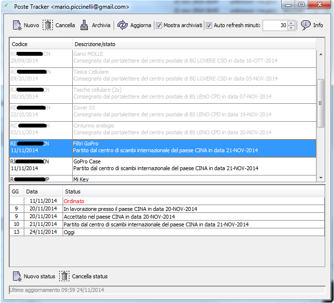

Di che si tratta?
Poste Tracker è un semplice programma per tenere traccia delle proprie spedizioni (per ora solo raccomandate internazionali) senza dover trascrivere ogni volta i codici di tracking sul sito di Poste Italiane.
Per chi è stato pensato?
Il programma è stato pensato per chi ordina da siti stranieri (AliExpress e simili) sfruttando la spedizione (solitamente gratuita) mediante raccomandata internazionale e vuole tenere traccia di quali pacchetti stanno arrivando, quali sono fermi alla dogana, quali si sono persi e quali sono puntuali.

Da dove arrivano le informazioni?
Le informazioni sono recuperate direttamente dalla sezione tracking (DoveQuando) del sito di Poste Italiane. Il mio programma non fa altro che recuperare lo stato delle spedizioni da quella pagina usando i codici di tracking inseriti dall'utente.
Ma scusa, se le informazioni sono le stesse che trovo sul sito di Poste Italiane, a cosa mi serve un programma?
A un sacco di belle cose:
- Posso memorizzare tutti i codici di tracking man mano che mi vengono comunicati dai venditori.
- Non devo inserirli ogni volta nel sito delle Poste.
- Posso avere a colpo d'occhio lo stato di tutti i miei ordini senza doverli andare a cercare a uno a uno.
- A ogni codice posso associare una breve descrizione (mai capitato di vedere che un ordine è in consegna e impiegare 10 minuti a risalire al prodotto corrispondente?).
- Il programma mantiene in memoria tutti gli status che ha visualizzato nel corso dei giorni, mentre sul sito delle Poste vengono visualizzati solo il primo (tipicamente la partenza del pacchetto dal venditore) e l'ultimo stato disponibile. In questo modo posso anche tenere traccia dei tempi per ciascuna fase.
- Il programma può mantenere in archivio anche spedizioni ormai, che non sono più aggiornate ma comunque restano a disposizione per fare statistiche sui tempi di consegna o come promemoria.
Come si usa?
- Per avviarlo: dovrebbe essere sufficiente fare doppio click sul file PosteTracker.jar. Se non funziona, probabilmente nel sistema non è stata installata l'ultima versione di Java (vedi sotto la sezione "cosa mi serve per farlo funzionare").
- Per aggiungere un tracking code: premi il pulsante "Aggiungi" e nella finestra inserisci il codice e una breve descrizione.
- Per archiviare una spedizione: seleziona la spedizione nell'elenco e premi il tasto "Archivia". Per vedere nella lista anche gli archiviati, attiva l'opzione "Mostra archiviati" (questi verranno mostrati in grigio). Per dis-archiviare una spedizione archiviata, selezionala e premi ancora il tasto "Archivia".
- Per aggiornare le informazioni: basta premere il tasto "Aggiorna" per caricare eventuali aggiornamenti dal sito delle Poste per tutti i codici non archiviati (quelli archiviati non vengono analizzati). Se ci sono stati nuovi, questi vengono mostrati in una finestra di notifica. Inoltre, selezionando un elemento nella tabella posso leggere tutti i suoi status nella parte bassa della finestra.
- Devo avere il programma sempre attivo? Gli status vengono aggiornati solo quando si avvia il programma o quando si preme il tasto "Aggiorna", quindi si, il consiglio è avere il programma sempre attivo con l'aggiornamento automatico attivato (selezionando l'opzione "auto refresh" e impostando un tempo in minuti, vanno benissimo i 30 preimpostati). In alternativa conviene avviare il programma almeno una volta al giorno, per catturare eventuali aggiornamenti (tenete presente che sul sito si possono reperire solo il primo e l'ultimo status, quindi se non vado a leggere uno stato nuovo prima che questo venga rimpiazzato non potrò recuperarlo).
Quanto costa?
Poste Tracker è stato scritto (ed è mantenuto) come hobby e per esigenze personali. Di conseguenza, ho deciso di rilasciarlo sotto licenza open source in forma gratuita. Ovviamente non dò alcuna garanzia in merito al suo funzionamento e alla sua manutenzione futura (a meno che qualcuno non voglia pagarmi per farlo, in tal caso si può discuterne)...
Cosa mi serve per farlo funzionare?
Il programma è scritto in Java e fornito come file JAR corredato di alcuni archivi. Non richiede alcun tipo di installazione, è sufficiente estrarre il contenuto del file ZIP in una cartella qualunque. L'unico prerequisito è avere installato sul proprio sistema il Java Runtime Environment. Se non l'hai installato, lo puoi scaricare gratuitamente dal sito ufficiale.
Se non sai se hai o meno Java e se questo è aggiornato, e hai Windows, il modo più semplice per verificare è scaricare Poste Tracker e fare doppio click sul file PosteTracker.jar. Se il sistema si lamenta che non è installato alcun programma per utilizzare il file, o appare un qualche altro errore, probabilmente la cosa si può risolvere installando Java dal link di cui sopra.
E se ho qualche problema?
Se hai qualche problema, se vuoi suggerire una feature o vuoi segnalare un errore, il mio indirizzo è mario.piccinelli@gmail.com. Tieni presente che questo progetto per me è un hobby, quindi non posso garantire nulla :-)